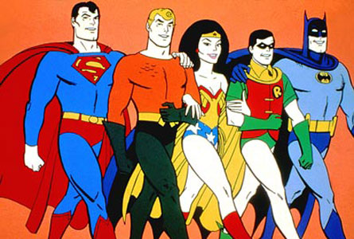

From
Open Source Software
to
Open Hardware
SouthWolf ( Song Fei )
Weibo: @southwolf1813
Open Source Software

Power of Community
Collection of Best Practice
- Stop trying reinvent the wheels.
- Fix them instead.
Open source projects I love most


What makes a great open source project
- User & Hacker friendly
- Well documented source code
- Clear designed interfaces
- Keep in touch with community
Why Open Hardware?
- Bring ideas off your chair
- More fun with REAL objects
- Make your dream come true, make life better
Great Open Hardware
Raspberry Pi
Credit-card Sized Computer

Arduino
Single-board Microprocessor with Great Toolsets

Why Arduino is great?
- Cheap, easy to get
- Expandable modules
- Excellent programming interfaces
- Open source community
C Code
void main(void) {
WDTCTL = WDTPW + WDTHOLD; // Password, and stop the timer
P1DIR = 0x40; // P1 Direction is OUTPUT
P1OUT = 0; // P1 OUTPUT low
BCSCTL3 |= LFXT1S_2; // VLO
IFG1 &= ~OFIFG; // Use DCO if clock fault
_bis_SR_register(SCG1 + SCG0); //stop DCO to wait for VLO
BCSCTL2 |= SELM_3 + DIVM_3;
while(1) {
P1OUT = 0x40;
_delay_cycles(100);
P1OUT = 0;
_delay_cycles(5000);
}
}
Arduino Code
void setup() {
pinMode(RED_LED, OUTPUT);
}
void loop() {
digitalWrite(RED_LED, HIGH); // turn the LED on
delay(1000); // wait for a second
digitalWrite(RED_LED, LOW); // turn the LED off
delay(1000); // wait for a second
}
It's Easy!
Arduino is the brain
3D printing is the body

Real World Open Hardware
Recent work of my friends
Microduino
A small, cheap, stackable Arduino
Hex Quadcopter
Arduino powered Quadcopter
3D printing Shells!
I love Open Source because...
Make more friends
WARNING
Thanks www.BaoZouManHua.com and @ShiningRay
FREEDOM IS NOT FREE
Thank You!
Now go make something cool
Made by hand with reveal.js
Contact Me
Weibo: @southwolf1813